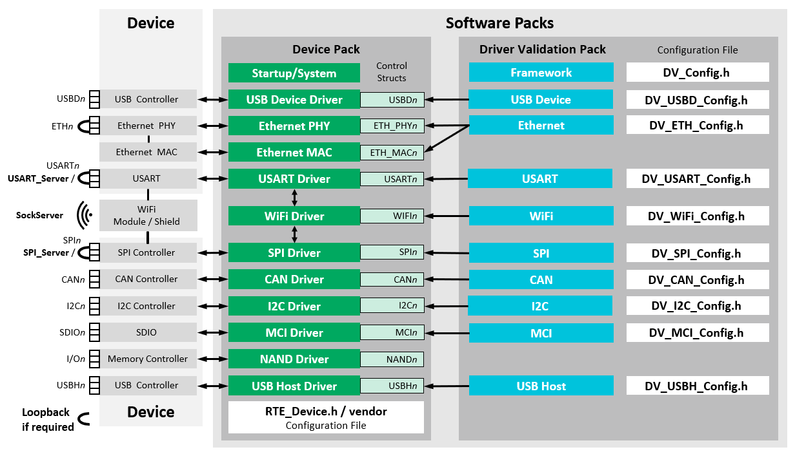

This manual explains the scope and the usage of the Software Pack for CMSIS-Driver Validation.
CMSIS-Driver specifies the software API for peripheral driver interfaces that connect microcontroller peripherals with middleware or the user application.
The CMSIS-Driver Validation is used to validate the driver implementation compliance to the CMSIS-Driver specification.
The CMSIS-Driver Validation provides:
- Configurable validation tests for various CMSIS-Driver interfaces
- Example projects that show the usage of the CMSIS-Driver Validation
The CMSIS-Driver Validation tests and verifies:
- API interface using the driver capabilities as well as valid and invalid parameters
- Data communication with various transfer sizes and communication parameters:
- Loopback testing (for some interfaces) for testing of the underlying hardware with usage of a local loopback
- Server testing (for some interfaces) for extensive testing of the underlying hardware with usage of a dedicated Server
- Transfer speed of the data communication with time measurement of data transfer duration
- Error event signaling in error conditions
The CMSIS-Driver Validation requires CMSIS-RTOS2 functionality and can be used to verify the setup and configuration of the CMSIS-Driver interfaces in a user system.
The diagram below shows an overview of the CMSIS-Driver Validation configuration.

This manual contains the following chapters:
- Setup - Describes the general setup of the CMSIS-Driver Validation test and how to generate test report.
- Report - Describes the reports produced by the CMSIS-Driver Validation.
- Debugging - Describes procedure for debugging of the interface drivers using the CMSIS-Driver Validation.
- Resource Requirements - Lists memory and CMSIS-RTOS2 requirements.
- Examples - Contains information about several example projects including the required hardware setup.
- Reference - Explains the configuration and tests for the various CMSIS-Driver interfaces.
The CMSIS-Driver Validation provides validation for the following interfaces:
- CAN - Controller Area Network (CAN) interface driver.
- Ethernet - Ethernet MAC and PHY peripheral interface driver.
- I2C - Inter-Integrated Circuit (I2C) multi-master serial single-ended bus interface driver.
- MCI - Memory Card Interface driver for SD/MMC memory.
- SPI - Serial Peripheral Interface (SPI) driver.
- USART - Universal Synchronous and Asynchronous Receiver/Transmitter (USART) interface driver.
- USB Device - Universal Serial Bus (USB) Device interface driver.
- USB Host - Universal Serial Bus (USB) Host interface driver.
- WiFi - WiFi (Wireless Fidelity Interface) module/shield driver.
This manual assumes that you are familiar with MDK. Refer to MDK Version 5 - Getting Started for additional information.
Revision History
| Version | Description |
| V2.0.0 |
- Remove bundle from components
- Change configuration from single file to a file per component
- Rework SPI Driver testing (introduced SPI_Server)
- Add SPI_Server application for Keil MCBSTM32F400 evaluation board
- Update WiFi Driver tests (support for WiFi Driver API V1.1.0)
- Update all examples
- Deprecate CMSIS-RTOS1
|
| V1.4.0 |
- Updated conditions to support all Cortex-M devices
- Introduced test groups (each driver is organized in a group)
- Improved XSL for XML display
- Updated all examples
- Removed example for Atmel board
- WiFi Driver Testing: Added SockServer application for PC running Microsoft Windows
- WiFi Driver Testing: Added upstream and downstream bandwidth testing
- WiFi Driver Testing: Added example for Inventek ISM43362 WiFi Driver testing on STMicroelectronics B-L475E-IOT01A1 board
- WiFi Driver Testing: Added example for Inventek ISM43362 WiFi Driver testing using ISMART43362-E WiFi shield mounted on NXP LPCXpresso55S69 board
- WiFi Driver Testing: Added examples for Espressif ESP8266 and ESP32 WiFi Driver testing with NXP MIMXRT1064-EVK board
- WiFi Driver Testing: Added example for WIZnet WizFi360 WiFi Driver testing with NXP MIMXRT1064-EVK board
|
| V1.3.0 |
|
| V1.2.0 |
- Added CMSIS-RTOS2 and Arm Compiler 6 compatibility
|
| V1.1.0 |
- Added USB Host, CAN and Ethernet Precision Time Protocol tests
|
| V1.0.0 |
- Initial release for CMSIS-Driver API V2.0
|